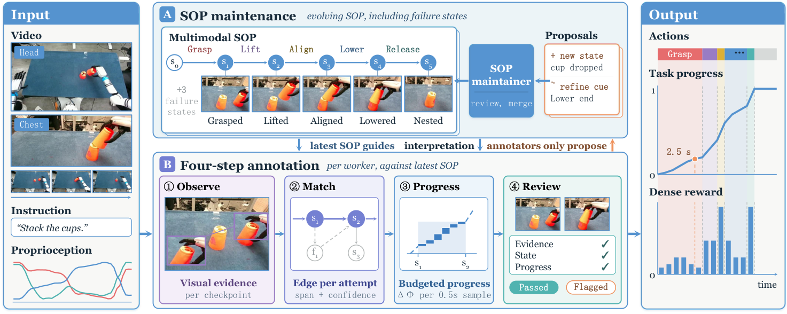
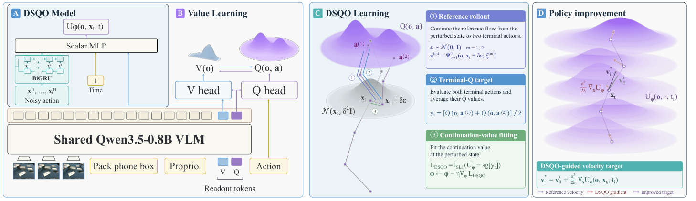

Every Step Counts: A Dual-level Stepwise Credit Assignment Framework for Flow-Matching Robot Policy Optimization
Abstract
Credit assignment at every step
Reinforcement learning for flow-matching robot policies faces credit assignment challenges at two levels: understanding progress during physical execution and guiding intermediate steps during action generation. We introduce a dual-level framework that addresses both. The Evolving Reward Annotator (ERA) produces consistent dense rewards through an evolving Standard Operating Procedure (SOP) graph, while Direct Stepwise Q Optimization (DSQO) uses learned continuation values to guide each flow-matching step. Together, they enable effective post-training of robot policies across real-world manipulation and simulation.
Method
Dual-level stepwise credit assignment
ERA measures how the task progresses. DSQO improves how the policy generates actions.

Evolving Reward Annotator
A shared, evolving SOP graph grounds progress evaluation across rollouts, including stalls, failures, and recoveries.

Direct Stepwise Q Optimization
Reference continuations assign values to intermediate flow states. Their gradients guide local velocity updates toward better actions.
Results
From progress supervision to policy improvement
Across 10 real-world manipulation tasks, our framework improves average success rate by 26.4 percentage points over the initial SFT policies. DSQO reaches 55.57% average success across 14 RoboCasa365 tasks. On human-labeled real-world episodes, ERA achieves 78.1% balanced direction agreement, recognizing forward progress, stalls, and regressions.